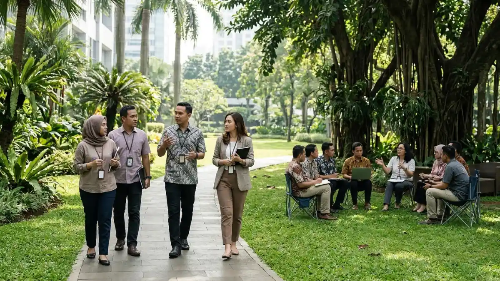

Suasana diskusi tim kerja di area camping ground berhutan pinus
dalam format meeting outdoor.
Suasana diskusi tim kerja di area camping ground berhutan pinus
dalam format meeting outdoor.
Apa itu meeting outdoor? Meeting outdoor adalah pertemuan tim yang digelar di ruang terbuka seperti taman, kebun, atau area camping.
Meeting outdoor memindahkan rapat dari ruang tertutup ke ruang terbuka agar suasana lebih segar dan diskusi lebih cair.
Bentuknya beragam, mulai dari walking meeting, rapat di area camping, hingga sesi strategi dalam retreat perusahaan.
Studi Stanford tahun 2014 melaporkan peningkatan kreativitas lebih dari 80 persen pada peserta yang berjalan kaki dibanding yang duduk.
Tidak semua agenda cocok dibawa keluar ruangan, sehingga pemilihan topik dan lokasi sangat menentukan.
Persiapan agenda, cuaca, dan perlengkapan yang rapi menjaga rapat tetap fokus dan hasilnya tercatat.
- Apa yang Dimaksud dengan Meeting Outdoor?
- Apa Saja Jenis Meeting Outdoor?
- Mengapa Banyak Tim Memilih Meeting Outdoor?
- Apa Manfaat Meeting Outdoor bagi Tim?
- Bagaimana Cara Kerja Meeting Outdoor?
- Faktor Apa yang Menentukan Keberhasilan Meeting Outdoor?
- Kapan Meeting Outdoor Tidak Cocok Dilakukan?
- Kesalahan Umum dalam Menyelenggarakan Meeting Outdoor
- Perbandingan Meeting Outdoor dan Meeting Indoor
- Tips Memulai Meeting Outdoor Pertama
- Kesimpulan
- FAQ
Apa yang Dimaksud dengan Meeting Outdoor?
Meeting outdoor adalah rapat, diskusi, atau sesi kerja kelompok yang dilakukan di luar gedung, dengan memanfaatkan udara terbuka, cahaya alami, dan suasana alam sebagai latar.
Dalam praktik sehari-hari, istilah ini juga disebut rapat luar ruangan atau rapat di alam terbuka. Perusahaan, sekolah, komunitas, dan organisasi nirlaba memakainya ketika ingin berdiskusi tanpa tekanan suasana kantor.
Yang membedakannya dari acara rekreasi biasa adalah adanya agenda kerja. Meeting outdoor tetap memiliki tujuan, pemimpin diskusi, dan hasil yang dicatat. Ruang terbuka hanya berperan sebagai tempat, bukan sebagai tujuan itu sendiri.
Format ini cocok untuk tim kecil hingga menengah yang membutuhkan brainstorming, evaluasi berkala, perencanaan program, atau penyegaran suasana kerja.
Batasannya jelas, yaitu bergantung pada cuaca, kualitas sinyal, dan sifat materi yang dibahas. Karena itu, meeting outdoor paling tepat dipandang sebagai pelengkap rapat dalam ruangan, bukan penggantinya.
Apa Saja Jenis Meeting Outdoor?
Jenis meeting outdoor yang umum meliputi walking meeting, rapat di taman atau kebun, rapat di area camping, sesi breakout di luar ruangan, dan retreat perusahaan.
Walking Meeting
Walking meeting adalah rapat sambil berjalan santai, biasanya satu lawan satu atau dalam kelompok kecil. Format ini cocok untuk diskusi ide, umpan balik, dan percakapan yang membutuhkan keterbukaan.
Rapat di Area Camping
Rapat di area camping dilakukan di lahan perkemahan yang dilengkapi tenda, gazebo, atau meja lipat. Format ini memberi ruang lebih luas untuk sesi kelompok dan cocok untuk agenda setengah hari hingga menginap.
Retreat Perusahaan
Retreat perusahaan menggabungkan sesi strategi, evaluasi, dan kegiatan kebersamaan selama satu hari atau lebih di luar kantor.
Bagian rapatnya tetap berjalan dengan agenda terstruktur, sementara kegiatan santai membantu hubungan antaranggota tim.
Selain ketiga bentuk itu, sesi breakout di taman atau halaman terbuka dapat disisipkan di tengah rapat biasa ketika peserta perlu berdiskusi dalam kelompok kecil.

Dua jenis meeting outdoor: walking meeting sambil berjalan santai dan diskusi kelompok di area terbuka hijau.Mengapa Banyak Tim Memilih Meeting Outdoor?
Sejumlah tim memilih meeting outdoor karena suasana rapat lebih segar dan kreatif, didukung bukti riset bahwa berjalan kaki di luar ruangan memicu ide baru.
Menurut ulasan Psychology Today pada Juni 2025, studi Stanford tahun 2014 menemukan bahwa peserta yang berjalan, baik di treadmill maupun di luar ruangan, menghasilkan ide yang lebih orisinal daripada peserta yang duduk.
Peningkatan kreativitasnya mencapai lebih dari 80 persen. Berjalan di luar ruangan dan tidak dalam garis lurus cenderung memicu jawaban yang paling baru.
Catatannya, studi tersebut meneliti aktivitas berjalan, bukan rapat formal secara langsung, sehingga hasilnya perlu dibaca sebagai indikasi, bukan jaminan.
Dari sisi pergerakan masyarakat, Badan Pusat Statistik mencatat perjalanan wisatawan nusantara sebanyak 630,41 juta pada Januari sampai Juni 2026, naik 2,71 persen secara tahunan, dan menjadi yang tertinggi untuk periode sama sejak 2019, menurut laporan Bisnis.com.
Angka ini bukan data khusus meeting outdoor, tetapi menggambarkan tingginya mobilitas yang ikut menopang tersedianya lokasi dan layanan di destinasi alam.
Apa Manfaat Meeting Outdoor bagi Tim?
Manfaat utama meeting outdoor meliputi ide yang lebih kreatif, suasana diskusi lebih santai, stres kerja berkurang, dan hubungan antaranggota tim yang lebih dekat.
Peningkatan kreativitas biasanya muncul karena perubahan suasana dan gerak tubuh. Cahaya alami serta udara segar membantu peserta merasa lebih rileks, sehingga mereka lebih berani menyampaikan pendapat.
Dari sisi kesehatan mental, sebuah studi tahun 2021 di Journal of Environmental Psychology melaporkan manfaat kesehatan mental yang signifikan dan bertahan lama pada karyawan dengan keluhan terkait stres yang mengikuti sesi jalan sambil berbicara di alam.
Aspek kognitif, emosional, dan sosial dari manfaat meeting outdoor untuk produktivitas dan kekompakan tim memiliki penjelasan yang lebih rinci.
Manfaat tersebut tidak muncul otomatis. Rapat yang tidak terarah tetap melelahkan, baik di dalam maupun di luar ruangan.
Bagaimana Cara Kerja Meeting Outdoor?
Meeting outdoor berjalan seperti rapat biasa dengan agenda, peserta, dan target jelas, tetapi lokasinya di ruang terbuka sehingga perlu persiapan cuaca, perlengkapan, dan pencatatan tambahan.
Alurnya dimulai dari penetapan tujuan, pemilihan lokasi, penyusunan agenda singkat, pembagian peran fasilitator dan notulis, persiapan perlengkapan, lalu penutupan dengan ringkasan keputusan.
Durasi sebaiknya dibatasi agar peserta tidak lelah oleh panas atau dingin. Dokumen penting dikirim sebelum rapat supaya tidak perlu membuka berkas di lapangan.
Hasil rapat dicatat lewat catatan digital atau papan tulis portabel, lalu dikirim kepada seluruh peserta pada hari yang sama.
Panitia yang baru memulai biasanya terbantu oleh langkah menyiapkan meeting outdoor yang efektif dari agenda sampai notulen, terutama untuk pembagian waktu dan peran.
Faktor Apa yang Menentukan Keberhasilan Meeting Outdoor?
Keberhasilan meeting outdoor ditentukan oleh tujuan rapat, jumlah peserta, kondisi cuaca, kenyamanan lokasi, ketersediaan perlengkapan, dan kemampuan fasilitator menjaga diskusi tetap fokus.
Pertama, tujuan rapat harus sesuai dengan format. Diskusi ide dan evaluasi ringan cocok di luar ruangan, sedangkan pembahasan dokumen sensitif lebih aman di dalam. Kedua, jumlah peserta perlu dibatasi agar suara terdengar dan perhatian tetap terjaga.
Cuaca dan kenyamanan lokasi menjadi faktor ketiga. Tempat teduh, akses toilet, pasokan air minum, dan rencana cadangan saat hujan wajib dipikirkan.
Faktor keempat adalah perlengkapan seperti meja lipat, kursi, tenda atau gazebo, pengeras suara, dan sumber daya listrik.
Bagi tim di Jawa Timur, Kota Batu sering menjadi pilihan karena berhawa sejuk dan memiliki banyak area perkemahan.
Menurut BPS Jawa Timur untuk Mei 2026 menunjukkan Kota Batu menerima 815,03 ribu perjalanan wisatawan nusantara, yang menandakan kawasan ini aktif sebagai tujuan wisata.
Pertimbangan soal lokasi meeting outdoor di Kota Batu dan perlengkapannya mencakup akses, fasilitas, dan kapasitas area.
Kapan Meeting Outdoor Tidak Cocok Dilakukan?
Meeting outdoor kurang cocok untuk agenda rahasia, presentasi berbasis layar, peserta dengan keterbatasan mobilitas, atau kondisi cuaca ekstrem yang membahayakan keselamatan dan mengganggu konsentrasi.
Menurut pakar kepemimpinan Julia Milner yang dikutip Welcome to the Jungle pada 2023, rapat berisiko tinggi yang menuntut presentasi dan kamera sebaiknya tetap dilakukan di satu tempat. Ia juga menyarankan walking meeting dibatasi hingga tiga atau empat orang agar tetap terkelola.
Ulasan Charitymiles menegaskan bahwa bukti riset mendukung walking meeting sebagai alat berbiaya rendah, tetapi bukan pengganti semua jenis rapat.
Aksesibilitas perlu diperhatikan agar peserta dengan keterbatasan fisik tidak tertinggal. Permintaan penyesuaian sebaiknya ditangani dengan tenang tanpa menyorot individu tertentu.
Jika prakiraan cuaca buruk, jadwal dapat dipindah ke ruang tertutup tanpa mengorbankan tujuan rapat.
Kesalahan Umum dalam Menyelenggarakan Meeting Outdoor
Kesalahan umum meliputi tidak menyiapkan agenda tertulis, memilih lokasi tanpa survei, mengabaikan cuaca, membawa terlalu banyak peserta, dan tidak mencatat keputusan rapat.
Agenda yang longgar membuat diskusi melebar karena suasana santai mengundang obrolan di luar topik. Lokasi yang tidak disurvei bisa bermasalah, misalnya tanpa tempat teduh, bising, atau jauh dari toilet.
Cuaca sering diabaikan, padahal hujan atau panas terik cepat menurunkan fokus. Jumlah peserta yang terlalu banyak membuat suara tidak terdengar.
Terakhir, banyak tim lupa mencatat keputusan sehingga rapat terasa menyenangkan tetapi tidak menghasilkan tindak lanjut.
Semua kesalahan ini dapat dicegah dengan daftar periksa sederhana sebelum hari pelaksanaan, yaitu agenda tertulis, survei lokasi, prakiraan cuaca, batas peserta, dan penanggung jawab notulen.
Perbandingan Meeting Outdoor dan Meeting Indoor
Meeting outdoor unggul dalam suasana dan kreativitas, sedangkan meeting indoor unggul dalam kontrol lingkungan, privasi, dan dukungan teknologi presentasi; pilihan terbaik bergantung pada tujuan rapat.
| Aspek | Meeting Outdoor | Meeting Indoor |
|---|---|---|
| Suasana | Segar, santai, terbuka | Formal dan terkontrol |
| Kreativitas | Cenderung terdorong oleh gerak dan suasana | Bergantung pada fasilitator |
| Privasi | Lebih rendah | Lebih tinggi |
| Teknologi | Terbatas, perlu perlengkapan tambahan | Lengkap dan stabil |
| Risiko utama | Cuaca, kebisingan, keselamatan | Relatif rendah |
| Cocok untuk | Brainstorming, evaluasi ringan, retreat | Presentasi, topik sensitif, rapat formal |
Banyak tim memakai kombinasi keduanya. Sesi ide dan perencanaan dibawa keluar ruangan, sedangkan penetapan angka, kontrak, atau keputusan sensitif dilakukan di dalam ruangan.
Tips Memulai Meeting Outdoor Pertama
Mulailah dengan rapat kecil berdurasi singkat di lokasi dekat, tetapkan satu tujuan, siapkan rencana cadangan untuk hujan, lalu minta umpan balik peserta setelah rapat selesai.
Pilih agenda yang ringan dan kreatif terlebih dahulu, misalnya brainstorming program bulan depan. Tanyakan kenyamanan peserta sebelum hari pelaksanaan, karena sebagian orang mungkin lebih nyaman dengan format tertentu.
Setelah rapat pertama, bandingkan hasilnya dengan rapat dalam ruangan. Perhatikan kualitas ide, partisipasi peserta, dan kejelasan keputusan.
Bila hasilnya baik, jadwalkan secara rutin agar kebiasaan terbentuk, karena praktik yang dilakukan sesekali cenderung kehilangan efeknya.
Kesimpulan
Meeting outdoor adalah rapat berstruktur di ruang terbuka yang paling efektif untuk diskusi ide, evaluasi ringan, dan penguatan hubungan tim bila dipersiapkan dengan baik.
- Pahami bahwa meeting outdoor melengkapi, bukan menggantikan, rapat dalam ruangan.
- Pilih agenda, lokasi, dan jumlah peserta yang sesuai dengan tujuan.
- Siapkan rencana cadangan cuaca serta catat setiap keputusan.
FAQ